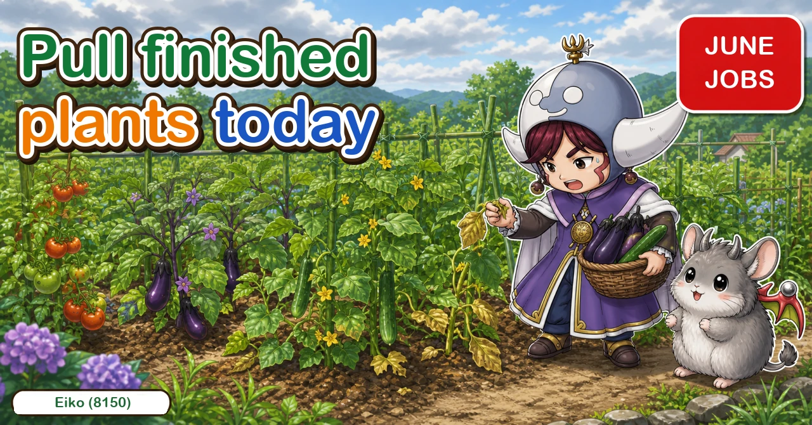
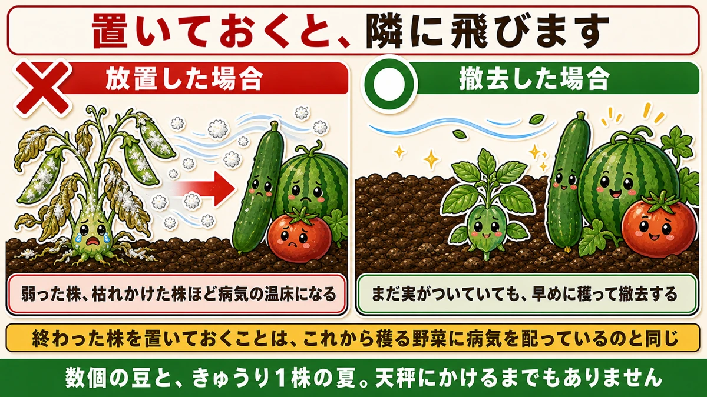
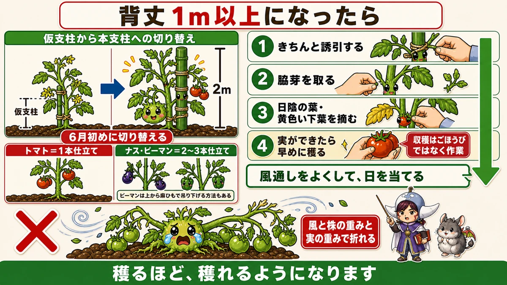
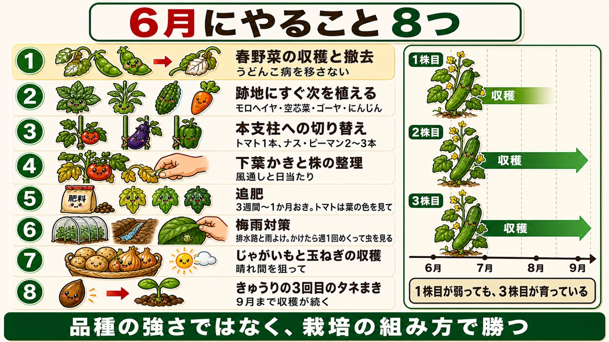

Pull a finished plant the same day 🌱 What to do in June

🗨️ "Picking has finally started. Nearly there."
🗨️ "The finished plants are still standing."
🗨️ "I don't know what June is for."
Hello, I'm Eiko. Eight years of growing vegetables organically and without pesticides, and a teaching licence in science.
The monthly instalment — June. A month whose character changes.
The point, up front:
Pull a plant that has finished cropping on the day it finishes.
Left standing, it becomes a powdery mildew reservoir — and the spores blow onto the cucumbers and tomatoes beside it ☺️
May and June are different in kind
May was about building the plant, and the jobs were much the same for everything: side shoots, tying in, pest checks.
June divides by crop. Cucurbits and nightshades need different things, and spring crops and summer crops need completely different things.
All at once, you get:
- the summer crops starting to crop
- the autumn-planted spring crops finishing
- temperatures climbing quickly
- a great deal of rain
It's the first month of harvesting and managing simultaneously.
And it carries: manage June properly and you keep picking right through to early autumn. Neglect it and the plants tire out before midsummer even starts.
① Pull the finished plants

What this diagram says （図解の文字）
- Left standing, it spreads to the neighbours
- × left in place ／ ○ removed
- The weaker and nearer to dead a plant is, the better a disease reservoir it makes
- Even if there's still fruit on it, pick it early and take the plant out
- Leaving a spent plant is the same as distributing disease to what you're about to pick
In June the autumn-planted crops finish one after another: peas, broad beans, onions, garlic, strawberries.
Once it stops flowering, there will be no more fruit. It's for removal.
Why it matters
Leave a finished pea plant standing — which everybody does, including me — and it becomes a mildew reservoir. The leaves go white and the fungus multiplies there, and a weak or dying plant makes the best reservoir of all.
And then: mildew spores blow on the wind.
What's nearby? Cucumbers, watermelons, squash, tomatoes — the crops that are about to start producing. The spores reach them and they're infected.
Leaving a spent plant in the ground is distributing disease to the crops you haven't picked yet.
Even if there's still some fruit
The hard case is a plant with a few pods left. Pick everything early and take the plant out.
A handful of pods, against a cucumber plant's entire summer. It isn't a close decision.
② Don't leave the gap empty
Bare soil gets used — if not by you, then by weeds and insects. An empty patch means weeds all at once, somewhere for pests to breed, and a convenient place to lay eggs.
So plant the next thing straight away. Things that can go in now:
- Molokhia — heat-tolerant and grows well in high summer
- Water spinach — the same, and it regrows as you pick it
- Bitter gourd — still in time
- Carrots — the summer sowing window opens
Molokhia and water spinach are two of very few leaf crops that produce in real heat, exactly when everything else gives up. Worth having.
③ Change to permanent supports

What this diagram says （図解の文字）
- Once they pass a metre
- Switching from temporary to permanent supports — 2 m — change at the start of June
- Tomato = single stem ／ aubergine and pepper = two or three stems
- Peppers can also be hung from above on twine
- 1 tie in properly…
The cane you put in at planting was temporary. At the start of June, change to a full-length support — about 2 m. Late, and it can't be put right.
How you train them differs:
- Tomato — single stem
- Aubergine and pepper — two or three stems, because more branches means more places for fruit
Peppers can also be hung from above on twine, which is tidier than several canes.
Why it matters
A fruiting plant gets heavy, fast. Add the rain and the wind, and stems and branches break under the combination of wind, plant weight and fruit weight.
Broken stems can be patched up — and not breaking them is far better. Growing a plant all season and losing it before midsummer is the worst ending there is.
④ Four jobs once they pass a metre
- Tie in properly to the 2 m support
- Remove side shoots
- Take off shaded and yellowing lower leaves, generously
- Pick fruit as soon as it's ready
Picking early is management, not reward
The fourth one surprises people. Harvesting is a job, not a prize.
Fruit left on the plant keeps drawing resources, and the plant has nothing left for the next flowers. Pick promptly and it moves on to making more.
The more you pick, the more you get.
⑤ Feeding
Fruiting crops eat while they fruit, so from June it's regular rather than occasional — and "once it looks tired" is already late. Set a rhythm instead.
Eight things to do in June

What this diagram says （図解の文字）
- Eight things to do in June
- 1 Harvest and remove the spring crops — don't pass mildew on
- 2 Plant the gap immediately — molokhia, water spinach, bitter gourd, carrots
- 3 Change to permanent supports — tomato one stem, aubergine and pepper two or three
- 4 Strip lower leaves and tidy the plant…
- Harvest and clear the spring crops
- Plant the gaps immediately
- Change to permanent supports
- Strip the lower leaves and open the plants up
- Pick promptly and often
- Feed on a schedule
- Drainage before the wettest weather — channels and raised beds
- Mulch with straw against soil splash and the coming heat
Get through June
Everything here is about air, weight and disease: remove what's finished, support what's heavy, open up what's crowded, and pick before the plant decides it's done.
A plant that gets through June in good order keeps going until autumn ☺️
To sum up
- ✅ Pull finished plants the same day
- ✅ A spent plant becomes a mildew reservoir and infects its neighbours
- ✅ Even with fruit left, pick it and take the plant out
- ✅ Plant the gap immediately — molokhia, water spinach, bitter gourd, carrots
- ✅ Change to 2 m supports at the start of the month
- ✅ Tomato single stem; aubergine and pepper two or three
- ✅ Fruit weight plus wind plus rain breaks stems
- ✅ Past a metre: tie in, de-shoot, strip lower leaves, pick early
- ✅ Picking is management — it tells the plant to make more
- ✅ Feed on a schedule once cropping starts
- ✅ Dig drainage before the heavy rain
You don't have to do all of it. Go out and pull one plant that has stopped flowering. That single act protects everything next to it 🌱
Thank you for reading!